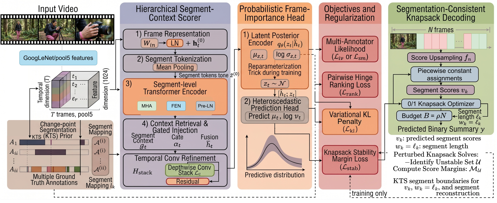

Video summarization aims to produce a compact representation of a long video by selecting a subset of temporally important segments that best reflect human preferences. This task is inherently difficult due to strong annotation subjectivity and the reliance on discrete decoding procedures — such as temporal segmentation and knapsack-based selection — during evaluation. Most existing approaches either learn deterministic importance scores that overlook these characteristics or adopt complex generative models that increase training and inference cost. In this paper, we propose VASTSum, an uncertainty-aware and decoder-aligned learning framework for video summarization that addresses both challenges within a single-pass model. The proposed method predicts probabilistic frame-level importance scores using a variational formulation, enabling explicit modeling of uncertainty arising from multi-annotator supervision. To account for subjectivity, we employ a supervision strategy that encourages alignment with plausible human annotation modes rather than enforcing a single consensus target. Furthermore, we introduce a decoder-aligned regularization that promotes stability of knapsack-based summary selection, reducing sensitivity to small perturbations in predicted scores. Experimental results on SumMe and TVSum show consistent and competitive Kendall and Spearman correlations across multiple data splits, demonstrating improved robustness under annotation disagreement while maintaining efficient single-forward inference.
Uncertainty-Aware Variational Head. We propose VASTSum, a unified variational formulation for frame-importance prediction that outputs both a mean estimate and an uncertainty signal, explicitly capturing ambiguity induced by multi-annotator supervision.
Mode-Aligned Supervision. We train from plausible annotator-consistent modes via a soft-min BCE strategy rather than collapsing subjective labels into a single averaged target, reducing over-smoothed supervision while preserving distinct summarization preferences.
Decoder-Aligned Stability Regularization. We introduce a knapsack stability margin loss that promotes invariant keyshot selection under the standard segmentation-plus-knapsack decoding pipeline, mitigating the training–evaluation mismatch.

Fig. 1: Overview of VASTSum. Sampled pool5 frame features are projected and processed by a hierarchical segment-context scorer (left). A variational frame-importance head (centre-left) predicts a per-frame latent posterior and heteroscedastic importance parameters, sampling during training and using the posterior mean at inference. Training objectives and regularization losses are shown centre-right. Predicted scores feed a segmentation-consistent 0–1 knapsack decoder (right) that selects segments under a 15% length budget to output the binary summary mask.
| Method | τ | ρ | τ | ρ |
|---|---|---|---|---|
| SumMe | TVSum | |||
| Random | 0.000 | 0.000 | 0.000 | 0.000 |
| Human | 0.205 | 0.213 | 0.177 | 0.204 |
| A2Summ | 0.088 | 0.096 | 0.157 | 0.206 |
| VASNet | 0.089 | 0.099 | 0.153 | 0.205 |
| PGL-SUM | 0.104 | 0.116 | 0.141 | 0.186 |
| CSTA | 0.108 | 0.120 | 0.168 | 0.221 |
| SummDiff | 0.133 | 0.148 | 0.173 | 0.226 |
| VASTSum (Ours) | 0.157 | 0.161 | 0.179 | 0.270 |
| Method | τ | ρ | τ | ρ |
|---|---|---|---|---|
| SumMe | TVSum | |||
| VASNet | 0.160 | 0.170 | 0.160 | 0.170 |
| SSPVS | 0.192 | 0.257 | 0.181 | 0.238 |
| VSS-Net | — | — | 0.190 | 0.249 |
| DMASum | 0.063 | 0.089 | 0.203 | 0.267 |
| CSTA | 0.246 | 0.274 | 0.194 | 0.255 |
| SummDiff | 0.256 | 0.285 | 0.195 | 0.255 |
| VASTSum (Ours) | 0.253 | 0.281 | 0.229 | 0.298 |
| Setting | SumMe τ / ρ | TVSum τ / ρ | ||
|---|---|---|---|---|
| VASTSum (full) | 0.253 / 0.281 | 0.229 / 0.298 | ||
| Regularization | ||||
| w/o CSTA-inspired reg. | 0.195 / 0.220 | 0.197 / 0.260 | ||
| dropout 0.6, LR 2.5×10⁻⁴ | 0.176 / 0.196 | 0.194 / 0.254 | ||
| Architecture | ||||
| + gated residual modules | 0.184 / 0.205 | 0.197 / 0.260 | ||
| + CSTA-style attention block | 0.199 / 0.220 | 0.188 / 0.245 | ||
| Uncertainty | ||||
| w/o KL (λkl=0) | 0.203 / 0.238 | 0.218 / 0.252 | ||
| dz smaller | 0.217 / 0.249 | 0.228 / 0.278 | ||
@inproceedings{tariq2026vastsum,
title = {Uncertainty-Aware and Decoder-Aligned Learning
for Video Summarization},
author = {Tariq, Omer and Raza, Syed Muhammad and Son, Jeongbae},
booktitle = {Proceedings of the International Joint Conference
on Neural Networks (IJCNN)},
year = {2026},
organization = {IEEE}
}